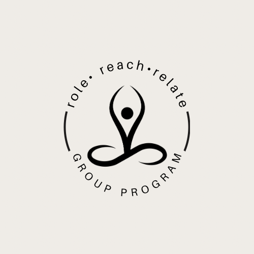

At Soft Landing Coaching, we understand how isolating and overwhelming life’s challenges can feel. That’s why we provide a safe, non-judgemental space, whether 1:1 coaching or in supportive group environment where you can express yourself and feel truly heard.
Having navigated our own periods of isolation and transformation, and drawing on professional coaching training, we bring both lived experience and proven expertise to our work. Our grounded, compassionate approach helps you move through difficult times with clarity and strength. Together, we’ll support you to rediscover your identity, reconnect with your true self, and create a fulfilling, emotionally rich life.
1:1 Coach As U Go
For those seeking quick, targeted support, this one hour boost session provides guidance, encouragement, and practical direction. It's built to give you clarity, focus, and momentum so you can step forward with confidence and purpose.
1:1 Coaching Package Deals
Our 6-week package deals are designed to support you through life’s most significant challenges. Whether relational, professional, or spiritual transitions, each option offers targeted guidance and practical tools based on where you are right now, helping you navigate uncertainty, gain clarity, build resilience, and create meaningful, lasting change.
Self-Discovery Group Coaching Program
For those seeking connection and a shared, transformational support journey, our 6-week group coaching program, role • reach • relate, offers a space to come together as one with like-minded individuals walking a similar path.

role • reach • relate was designed to expand your perception and empower you to see the profound connection between how you view yourself and how the world responds to you. Your internal role (Self), how you reach out (externally), and how you relate with others (collectively) are all essential to your emotional, mental, and spiritual evolution. What happens within you directly shapes what unfolds around you. This concept focuses on self-awareness, communication, relationships, and ultimately consciousness, a state of non-duality where every living being is aware of one another, and all things are interconnected. By growing within yourself, you automatically uplift those around you and the world at large. This understanding reminds us that if we don’t plant the right seeds, life as we know it can steer us off course, leaving us unaware of our actions, their root causes, and our ability to respond intentionally. But by consciously nurturing the seeds we plant from within, we can transform every aspect of our lives, no matter the challenges we face.
Book Your Session
role – The relationship we have with ourselves is fundamental, as it lays the foundation for the life we ultimately co-create with others. When we realign with our higher self, the essence of who we are at our core as spiritual beings beyond identity or ego, we come into a deeper, more expansive truth. Role reminds us to re-evaluate our deepest values and desires, accept our flaws, and thrive by living a meaningful and purposeful life. When we learn to accept all that we are and love ourselves unconditionally, instead of letting external circumstances dictate our actions or allowing ourselves to be subject to worldly events, only then can we truly begin to witness the power of influence. When we embrace and accept all that we are as capable beings, and walk in faith into the unknown, then we are fulfilling the role of spiritual alignment.
reach – We cannot fulfil this part unless we understand the depth of our essence and take ownership of our won role first. Reach is about how we reach out, connect, respond, react, and interact with others – whether through external events, environmental circumstances, or within the spaces we engage in, such as family, friendships, work, and community – it teaches us about responsibility to others, communication. How we treat ourselves directly affects how we reach out to the world, and how we view ourselves ultimately influences how we treat everyone around us and the response we receive. The Law of Karma is always active, so unless we consciously choose thoughts and actions that positively impact ourselves and others, life cannot return what we expect to receive.
relate - Everyone and everything is interconnected. Relate reminds us to deepen our knowledge of the circle of life – the Law of Oneness – and how vibrationally connected we are through synergy. How we relate to the external world through our viewpoint directly and indirectly affects how the world responds to our thoughts, feelings, and actions. This part teaches us the importance of manifesting the right situations, people, events, and circumstances that align with our values and desires. The more disconnected we are from our true selves, the harder we fall; however, the more connected we are within, the more we get to witness the fruition of our desires. In doing so, we not only influence our personal reality but also contribute to the collective energy of the world around us.